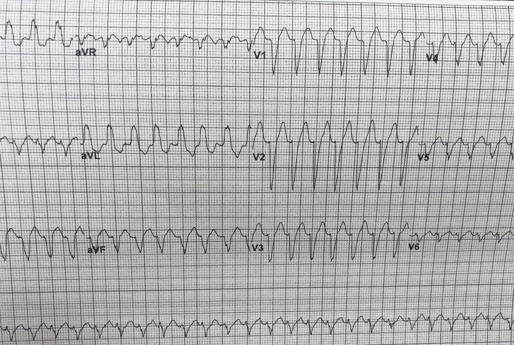
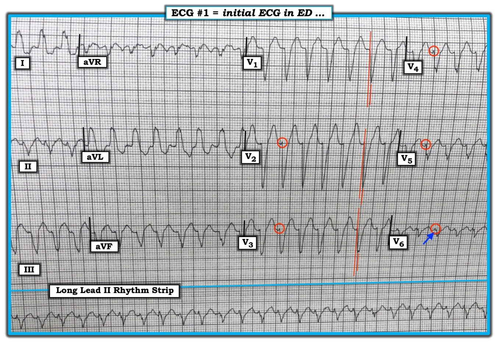

24/01/2019 — Nhịp nhanh thất? Hay SVT kèm dẫn truyền lệch hướng?
Bản dịch tiếng Việt của bài "Ventricular Tachycardia? Or SVT with Aberrancy?" – Dr. Smith’s ECG Blog. Giữ nguyên toàn bộ 4 hình ảnh của bản gốc.
Bản ghi này được một bác sĩ vừa tốt nghiệp nội trú nhắn tin cho tôi, kèm thông tin sau:
“Bệnh nhân 70 mấy tuổi, tiền sử TAVR (thay van động mạch chủ) và đột quỵ. SVT kèm dẫn truyền lệch hướng hay VT?”


Đây là điều tôi nhắn lại: “SVT. Cho adenosine.”
Phản hồi: “Làm sao anh phân biệt được?”
Câu trả lời của tôi: “Phần đầu của QRS rất nhanh. Hãy nhìn các chuyển đạo trước tim bên phải: LBBB kinh điển. aVR âm và sóng lệch ban đầu của sóng q ở aVR chỉ dài 20 ms”
Tôi đã không nói thêm: “ngoại trừ việc QRS ở các chuyển đạo bên V5 và V6 là âm. Dù âm, vẫn có sóng R đơn pha ở các chuyển đạo bên còn lại là I và aVL, điển hình của LBBB. Khoảng từ khởi đầu QRS đến đáy sóng S ở các chuyển đạo trước tim bên phải chỉ khoảng 40-50 ms. Điều này không thể có trong VT.”
Người ta dễ bị cám dỗ kết luận ngay đây là VT vì:
1. Bệnh nhân lớn tuổi, có bệnh tim, điều này nhìn chung nghiêng về VT
2. Người ta có thể bị đánh lừa mà nghĩ rằng có QRS đồng hướng (concordance) ở V1-V6 (mọi QRS cùng một hướng, điều này có vẻ đúng). Tuy nhiên điều này KHÔNG ĐÚNG: KHÔNG có đồng hướng. Chỉ có thể gọi là đồng hướng khi QRS hoàn toàn theo một hướng hoặc hoàn toàn theo hướng kia. Nếu có sóng RS thì không thể có đồng hướng. Ở đây, có sóng RS ở mọi chuyển đạo trước tim.
Trả lời: SVT kèm dẫn truyền lệch hướng. Điều này đã được chứng minh khi tìm thấy một điện tâm đồ cũ lúc nhịp xoang có hình thái LBBB y hệt.
Giải thích:
VT điển hình (khác với VT phân nhánh (fascicular VT)) khởi phát trong cơ tim, không phải trong các sợi Purkinje (sợi dẫn truyền). Vì vậy, xung động ban đầu cần một khoảng thời gian để lan qua cơ tim và do đó đi chậm (nên mất thời gian, tức là nhiều mili giây để đi qua). Khi cuối cùng nó tới được các sợi dẫn truyền, nó mới đi nhanh (hẹp).
Vì vậy trong VT:
–Phần đầu của QRS chậm [rộng, với mức thay đổi điện thế trên mỗi đơn vị thời gian tương đối nhỏ (tức Vi/Vt nhỏ)], còn phần sau của QRS nhanh (hẹp, với Vi/Vt tương đối lớn).
Trong SVT kèm dẫn truyền lệch hướng, điều ngược lại là đúng:
Xung động đi từ trên xuống, từ hoặc qua nút AV, và do đó sử dụng các sợi dẫn truyền. Trong SVT kèm dẫn truyền lệch hướng, có một cản trở nào đó đối với dẫn truyền, chẳng hạn RBBB hoặc LBBB, nhưng xung động vẫn đi xuống được qua một đường dẫn nhanh nào đó (nhánh trái trong RBBB hoặc nhánh phải trong LBBB) và chỉ VỀ SAU mới phải đi qua cơ tim để tới phần còn lại của tim.
Do đó:
–Phần đầu của QRS nhanh (hẹp, với Vi/Vt tương đối lớn), còn phần sau của QRS chậm (rộng, với Vi/Vt tương đối nhỏ).
Một quy tắc hay khác:
Nếu nó trông y hệt LBBB hoặc RBBB thì đó là SVT kèm dẫn truyền lệch hướng. Nhưng hãy cẩn thận: nếu nó trông giống LBBB nhưng có sóng r rộng ở V1 thì đó là VT. Nếu nó trông giống RBBB nhưng có sóng r rộng ở V1 thì nhiều khả năng là VT.
Cuối cùng, nói một cách chặt chẽ, đây không phải là “dẫn truyền lệch hướng” vì đã có BBB từ trước; dẫn truyền lệch hướng hàm ý rằng LBBB hoặc RBBB là hậu quả của nhịp nhanh, chứ không phải một dấu hiệu nền. Nhưng tất nhiên, cho tới khi tìm được điện tâm đồ cũ đó, bạn sẽ không biết. Vì vậy điều này chỉ có ý nghĩa học thuật.
Xử trí:
Tất nhiên cả VT lẫn SVT kèm dẫn truyền lệch hướng đều có thể điều trị bằng sốc điện chuyển nhịp, nhưng trừ khi bệnh nhân sốc nặng hoặc phù phổi, bạn có thời gian để cho adenosine. Nếu là VT, adenosine vẫn an toàn. Adenosine KHÔNG an toàn nếu nhịp không đều và đa dạng, gợi ý khả năng rung nhĩ kèm WPW.
Jerry Jones đã bổ sung những bình luận hữu ích sau:
Về phức bộ QRS âm ở V6: bạn gặp điều này rất nhiều với blốc nhánh trái. Xung động phải đi vào thất trái xuyên qua vách từ thất phải. Khi làm như vậy, xung động có thể đi vào phân nhánh sau trước tiên, vì phân nhánh này nằm ngay sát vách. Mặc dù điều này thường không được coi là LAFB, bạn vẫn có cùng hiệu ứng vì phân nhánh sau được hoạt hóa trước, sau đó mới tới phân nhánh trước. Đây cũng là nguyên nhân gây trục lệch trái rõ rệt.
Giá trị khoảng từ R đến đáy S (R-to-S nadir) cũng rất hữu ích, dù VT phân nhánh cũng có thể biểu hiện như vậy. Tuy nhiên, độ rộng của các phức bộ QRS này khá rộng đối với một phức bộ phân nhánh. Một phần sườn lên của sóng “T” ở các chuyển đạo trước tim thực ra là QRS. Bạn có thể thấy điều này bằng cách dùng compa đo (calipers) đo độ rộng QRS ở vài chuyển đạo chi rồi so sánh với độ rộng QRS ở các chuyển đạo trước tim.

———————————————————–
Bình luận của KEN GRAUER, MD (28/1/2019):
———————————————————–
Một ví dụ tuyệt vời của Dr. Smith về tình huống khó xử thường gặp trong cấp cứu là “WCT đều”. Mặc dù suy nghĩ của tôi về xử trí ca này tương tự như của Dr. Smith = Giả sử bệnh nhân này ổn định huyết động, hãy bắt đầu bằng thử nghiệm chẩn đoán/điều trị với Adenosine — tôi sẽ đưa ra vài suy nghĩ khác biệt về cách tiếp cận ra quyết định của mình. Chủ đề này vẫn là một chủ đề mời gọi bàn luận sôi nổi — và đó là mục tiêu của các bình luận dưới đây của tôi.
- Để cho rõ ràng — tôi sao chép lại và đánh nhãn điện tâm đồ của ca này trong Hình 1.


==========================
Tôi luôn bắt đầu bằng việc mô tả những gì ta có — mà trong ca này là một WCT đều (= nhịp nhanh QRS rộng – Wide-Complex Tachycardia) tần số ~170/phút, không có dấu hiệu rõ ràng của hoạt động nhĩ. Chúng ta cần xác nhận rằng bệnh nhân này ổn định huyết động — vì nếu không, thì bất kể nhịp là VT hay SVT (kèm BBB có từ trước hoặc dẫn truyền lệch hướng) — đều có chỉ định sốc điện chuyển nhịp đồng bộ ngay lập tức.
- Y văn cho thấy về mặt thống kê — nguyên nhân của một WCT đều không có dấu hiệu rõ ràng của hoạt động nhĩ sẽ hóa ra là VT trong ít nhất 80% trường hợp. Nếu bệnh nhân “lớn tuổi” và có bệnh tim nền (như trường hợp bệnh nhân này) — khả năng thống kê là VT trước cả khi bạn nhìn vào điện tâm đồ tăng lên tới ~90%. Tôi xin nhấn mạnh rằng 90% không phải là 100% — và ca này là ví dụ hoàn hảo về việc khi nào các đặc điểm điện tâm đồ làm giảm đáng kể khả năng thống kê của VT — nhưng: i) Tôi nghĩ biết được thông tin này về khả năng thống kê là hữu ích; ii) Do khả năng thống kê này, chúng ta cần coi là VT cho tới khi chứng minh được điều ngược lại; iii) Ngay cả khi nhịp là VT — NẾU bệnh nhân ổn định huyết động — bạn không nhất thiết phải sốc điện VT ngay lập tức. Thay vào đó, áp dụng thêm các biện pháp chẩn đoán trong khi bạn cố gắng tăng mức độ chắc chắn của chẩn đoán (bao gồm cả khả năng thử nghiệm chẩn đoán/điều trị bằng một thuốc như Adenosine) là hoàn toàn hợp lý.
- Thay vì chỉ phân biệt giữa 2 thực thể chẩn đoán ( = VT với SVT, kèm BBB có từ trước, SVT kèm dẫn truyền lệch hướng, hoặc AVRT với dẫn truyền xuôi dòng qua một đường phụ) — tôi ủng hộ việc xem xét 3 Thực thể Chẩn đoán: i) VT chắc chắn; ii) SVT chắc chắn; hoặc, iii) không thể đạt được mức chắc chắn >95-100% trong việc phân biệt VT với SVT. Tôi xếp ca cụ thể này ( = ý kiến của tôi) vào iii = không thể đạt được mức chắc chắn >95-100% về chẩn đoán nhịp từ bản ghi duy nhất trình bày trong Hình 1.
- ĐIỂM MẤU CHỐT: Bạn thường sẽ không thể đạt được mức chắc chắn >95-100% về chẩn đoán một nhịp WCT đều vào thời điểm bạn cần bắt đầu điều trị. Tôi sẵn lòng thừa nhận thực tế lâm sàng của sự không chắc chắn chẩn đoán này.
Y văn có rất nhiều tiêu chuẩn để phân biệt VT với SVT kèm BBB có từ trước hoặc dẫn truyền lệch hướng. Mỗi bộ tiêu chuẩn đều có những người ủng hộ riêng. Tôi dẫn một số nguồn của tôi dưới đây, và tóm tắt cách tiếp cận của tôi TẠI ĐÂY. Hai tiêu chuẩn có độ đặc hiệu gần 100% cho VT là: i) Đồng hướng toàn bộ ở các chuyển đạo ngực (tức là, cả 6 chuyển đạo ngực đều cho thấy phức bộ QRS dương toàn bộ hoặc âm toàn bộ); và, ii) Phân ly nhĩ thất.
- Mặc dù phức bộ QRS gần như âm hoàn toàn ở cả 6 chuyển đạo ngực trong Hình 1 — nó chắc chắn không âm hoàn toàn (các vòng tròn ĐỎ đánh dấu một sóng r ban đầu nhỏ và mảnh ở các chuyển đạo từ V2 đến V5). Tiêu chuẩn đồng hướng toàn bộ ở các chuyển đạo ngực này chỉ hữu ích nếu TẤT CẢ 6 chuyển đạo ngực đều dương hoàn toàn hoặc âm hoàn toàn. Chỉ cần một chuyển đạo ngực cho thấy cả sóng r lẫn sóng s — độ đặc hiệu chẩn đoán của tiêu chuẩn này bị vô hiệu hoàn toàn. Trên thực tế — hiếm khi (<10% các nhịp WCT) bạn thấy đồng hướng toàn bộ (đồng hướng dương hoặc đồng hướng âm) ở cả 6 chuyển đạo ngực — nên phần lớn thời gian tiêu chuẩn này sẽ không hữu ích. Vì vậy, thấy được thì tuyệt vời — nhưng không giúp được gì nếu bạn không thấy.
- Lưu ý rằng trong Hình 1, sóng lệch dương ban đầu ở chuyển đạo V6 thực ra RỘNG, đồng thời có khía (mũi tên XANH). Nếu có ý nghĩa gì — đặc điểm hình thái này là một yếu tố nghiêng về VT.
- Thật tuyệt khi bạn có thể xác định một cách đáng tin cậy phân ly nhĩ thất trong một WCT đều — vì dấu hiệu này khi đó sẽ chẩn đoán xác định VT. Dù vậy, theo kinh nghiệm của tôi — hiện tượng phân ly nhĩ thất bị lạm dụng rất nhiều, và bị chẩn đoán quá mức. Người ta cần thấy bằng chứng rõ ràng của một nhịp nhĩ nền đều mà hoàn toàn không liên quan đến các phức bộ thất. Mặc dù hình thái sóng T thay đổi suốt dải nhịp chuyển đạo II dài trong Hình 1 (mà tôi nghi có thể đại diện cho một dạng hoạt động nhĩ nào đó) — tôi không thể xác nhận (bằng compa đo) một nhịp nhĩ nền độc lập ổn định. Vì vậy, không thể dùng tiêu chuẩn phân ly nhĩ thất ở đây.
- Vượt ra ngoài phần cốt lõi: Đáng tiếc là bản ghi trong Hình 1 bị biến dạng rõ rệt do góc nghiêng của các đường kẻ ô thay đổi. Điều này khiến tôi không thể khảo sát điều có vẻ là sự thay đổi lặp lại nhẹ nhưng chắc chắn của khoảng R-R (dài-ngắn) trong một số đoạn của bản ghi. Có thể thực sự có hoạt động nhĩ ẩn … nhưng tôi cần một bản ghi chất lượng tốt hơn để khảo sát điều này. Dù sao đi nữa, tôi không thấy bằng chứng nào của phân ly nhĩ thất.
Sự chậm trễ nhất quán ở sóng lệch QRS ban đầu (hoặc ở thời gian cho tới khi đạt đáy R-đến-S ở bất kỳ chuyển đạo trước tim nào) — rõ ràng là một tiêu chuẩn hữu ích nghiêng về VT. Vấn đề (theo cách tôi đọc y văn) — là việc không có sự chậm trễ như vậy thì không đủ để loại trừ chắc chắn VT. Vì vậy, mặc dù các chuyển đạo chi trong Hình 1 chắc chắn trông điển hình cho một hình ảnh LBBB trên thất, và các phức bộ QRS chủ yếu âm ở V1, V2, V3 với sóng r nhỏ và mảnh có thể phù hợp với LBBB — thì sườn xuống không thật thẳng đứng của các sóng S ở thành trước này (các đường ĐỎ mảnh gợi ý khoảng r-đến-đáy s ~0,04-0,05 giây) và việc không có sóng R đơn pha ở chuyển đạo V6 với sóng r ban đầu rộng, có khía nhưng nhỏ ở chuyển đạo V6 này là những đặc điểm hình thái không được mong đợi ở LBBB điển hình. Tôi không nghĩ ( = ý kiến của tôi) hình thái QRS trong Hình 1 là đủ để khẳng định LBBB.
- CẢNH BÁO #1: Một số bệnh nhân có hình ảnh BBB nền không điển hình rõ rệt do sẹo từ nhồi máu cũ và/hoặc bệnh cơ tim. Tìm được một điện tâm đồ cũ của bệnh nhân có thể vô cùng quý giá trong những trường hợp như vậy (như ở ca này) — bằng cách xác nhận rằng hình thái QRS không điển hình trong cơn WCT giống hệt hình ảnh QRS nền của bệnh nhân. Dù vậy, đáng tiếc là phần lớn thời gian bạn sẽ không có sẵn điện tâm đồ cũ vào lúc cần bắt đầu xử trí.
- CẢNH BÁO #2: Theo kinh nghiệm của tôi, sự hiện diện của trục lệch cực độ (trong đó phức bộ QRS âm hoàn toàn ở chuyển đạo I hoặc ở chuyển đạo aVF) — rất hữu ích để gợi ý rằng một nhịp WCT đều là VT. Dù vậy, bệnh nhân LBBB đôi khi có thể biểu hiện phức bộ QRS âm hoàn toàn ở chuyển đạo aVF …
- CẢNH BÁO #3: Mặc dù hình thái QRS của LBBB “điển hình” phải biểu hiện sóng R đơn pha ở cả hai chuyển đạo bên trái là I và V6 — một số bệnh nhân không cho thấy sóng R đơn pha ở các chuyển đạo ngực cho tới khi bạn tới vị trí bên V7 hoặc V8. Điều này đặc biệt đúng ở bệnh nhân LVH rõ rệt, trong đó vectơ khử cực thất trái ưu thế hướng không chỉ sang bên, mà còn ra sau ở mức độ lớn.
ĐIỀU CỐT LÕI — Nhận định ban đầu của tôi về nhịp WCT đều trong Hình 1 là dù có một số đặc điểm không điển hình — một số phần của bản ghi gợi ý rõ ràng một hình ảnh LBBB trên thất. Khi bệnh nhân trước mặt bạn ổn định huyết động — đây là tình huống lý tưởng để thử nghiệm chẩn đoán/điều trị bằng Adenosine. Đây cũng là tình huống lý tưởng để cử thêm “một người phụ” tại giường nhanh chóng tìm trong hồ sơ một điện tâm đồ cũ — điều mà trong ca này đã giúp xác định chắc chắn rằng nhịp trong Hình 1 thực sự là SVT kèm BBB có từ trước, chứ không phải VT.
==========================
Tài liệu tham khảo chọn lọc:
- Brugada P, Brugada J, Mont L, và cs.: A New Approach to the Differential Diagnosis of a Regular Tachycardia with a Wide QRS Complex. Circulation 83:1649-1659, 1991.
- Blomstrom-Lundqvist C, Scheinman MM, Aliot EM, và cs.: ACC/AHA/ESC Guidelines for Management of Patients with Supraventricular Arrhythmias — Executive Summary. J Am Coll Cardiol 42:1493-1531, 2003.
- Vereckei A, Duray G, Szenasi G: Application of a New Algorithm in the Differential Diagnosis of Wide QRS Complex Tachycardia. Eur Heart J 28:589-600, 2007.
- Sasaki K: A New Simple Algorithm for Diagnosing Wide QRS Complex Tachycardia: Comparison with Brugada, Vereckei and aVR Algorithms. Circulation 120:S671, 2009.
- BẤM VÀO ĐÂY — để xem Cách tiếp cận của tôi đối với WCT Đều.